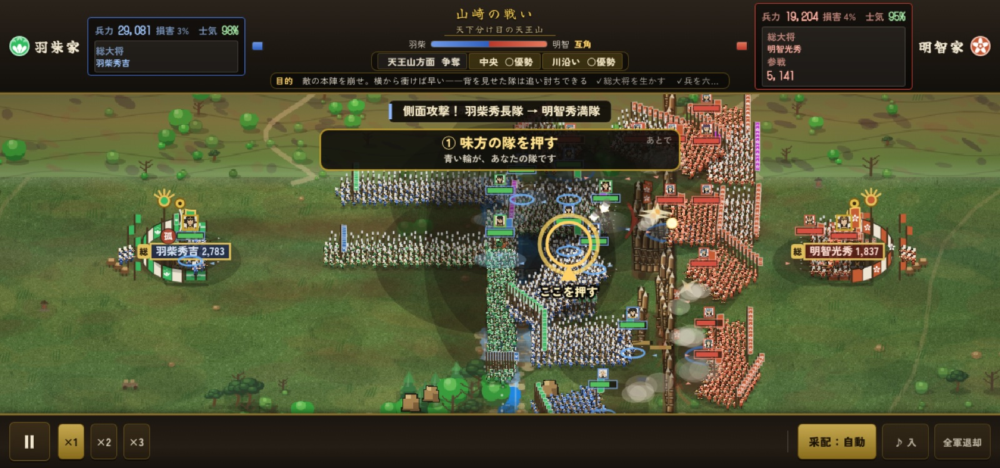
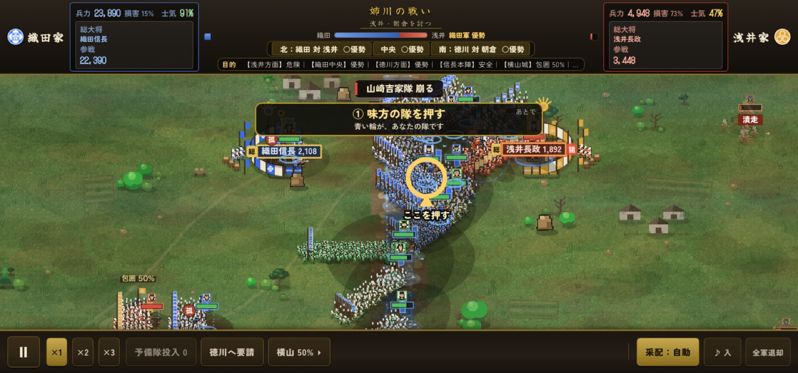
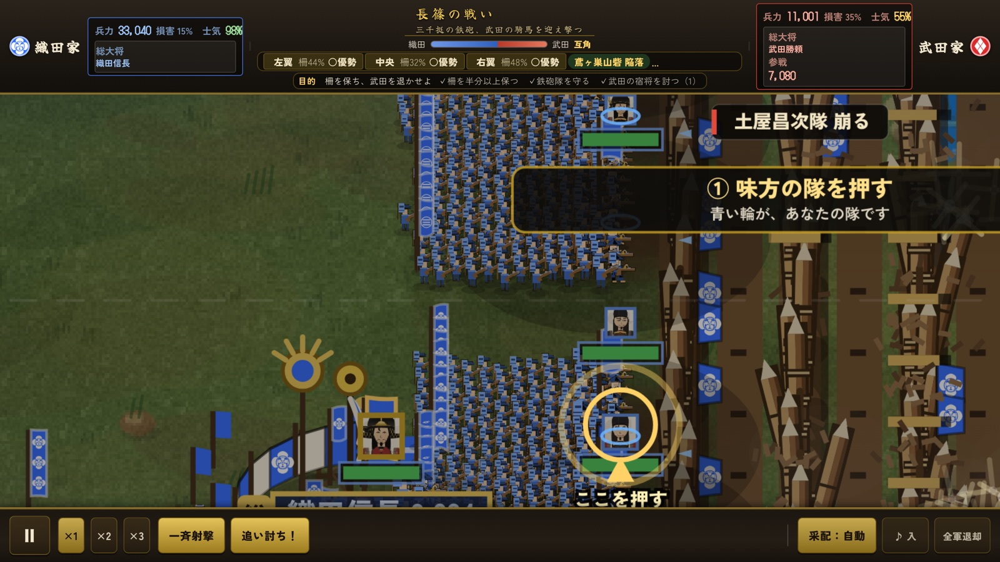
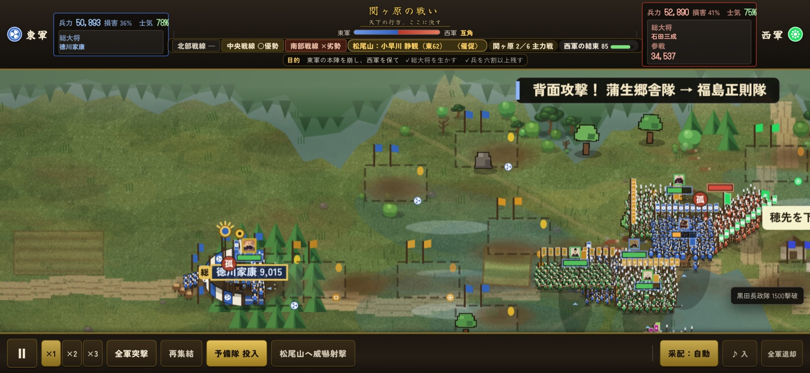

BATTLEFIELDS
同じ戦いは、ひとつもない。

山崎の戦い
1582 羽柴 対 明智
天王山を巡る高地争奪戦。
高所を取るか、中央を押し切るか。

姉川の戦い
1570 織田・徳川 対 浅井・朝倉
川を挟んだ大軍同士の激突。
浅瀬を渡るか、別戦線を支えるか。

木津砦の戦い
1576 織田 対 本願寺
川・橋・柵・砦を突破する攻防戦。
正面突破か、迂回か。

長篠の戦い
1575 織田・徳川 対 武田
馬防柵と鉄砲、騎馬軍団の激突。
防衛線を維持できるか。

関ヶ原の戦い
1600 東軍 対 西軍
巨大戦線と複数軍団。味方の動き、裏切り、援軍、戦線崩壊。
大局を読む戦い。
 織田信長総大将
織田信長総大将 明智光秀鉄砲・城攻め
明智光秀鉄砲・城攻め 羽柴秀吉調略・大返し
羽柴秀吉調略・大返し 徳川家康堅陣
徳川家康堅陣 武田勝頼騎馬突撃
武田勝頼騎馬突撃 柴田勝家先手・猛将
柴田勝家先手・猛将 丹羽長秀本陣の支え
丹羽長秀本陣の支え 上杉謙信軍神
上杉謙信軍神